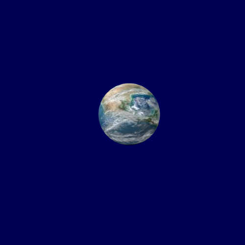
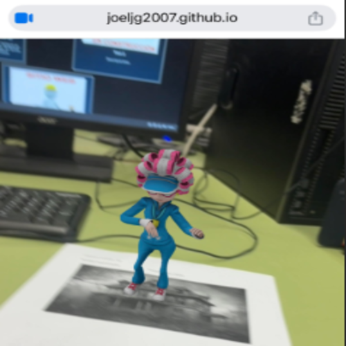

Les llibreries 3D en JavaScript han revolucionat la creació d'entorns virtuals i experiències immersives a la web. A-Frame i MindAR són dues de les més destacades, cadascuna amb funcionalitats específiques per a diferents tipus de projectes.
Gràcies a aquestes eines, els desenvolupadors podem dissenyar des d'experiències interactives senzilles fins a aplicacions immersives avançades que combinen realitat virtual, realitat augmentada i interacció 3D. Aquestes tecnologies han convertit el web en una plataforma cada cop més potent per a la creació de contingut digital innovador.
Aquest portafolis explora aquestes llibreries en profunditat i presenta els projectes desenvolupats amb cadascuna d'elles.
Visita el GitHub d'aquest projecte
Un petit exercici amb A-frame per testejar l'apliació en diversos dispositius: en pantalla d'ordinador, en format mòbil i a unes ulleres de Realitat Virtual

Descripció breu.
Descripció breu.
Estudiant de SMIX del cicle formatiu de Grau Mitjà en Sistemes Microinformàtics i Xarxes.
M'apassiona la tecnologia i la informàtica, especialment tot el que té a veure amb la configuració, el manteniment i la seguretat dels sistemes informàtics.
Durant la meva formació, he adquirit coneixements en hardware, xarxes, sistemes operatius i administració de servidors. M'agrada treballar en equip i solucionar problemes tècnics de manera eficient. Estic motivat per continuar aprenent i aplicar els meus coneixements en un entorn professional.